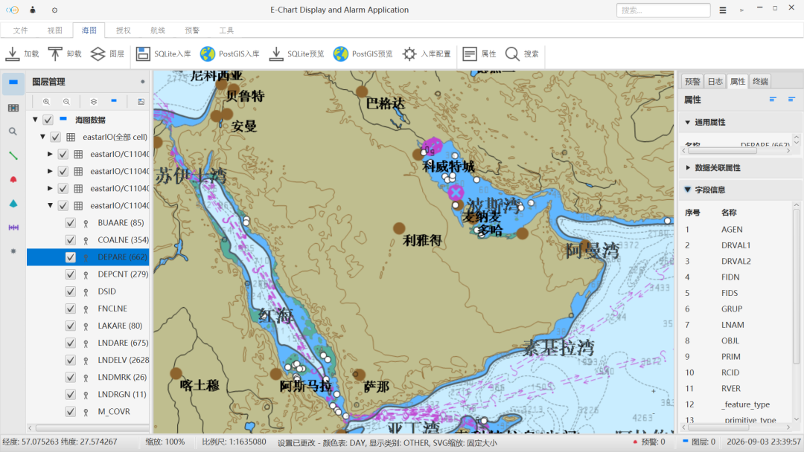
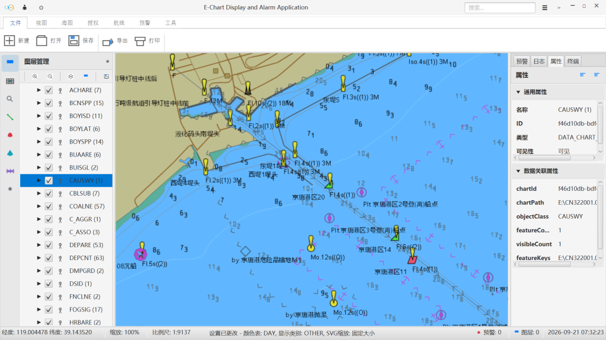
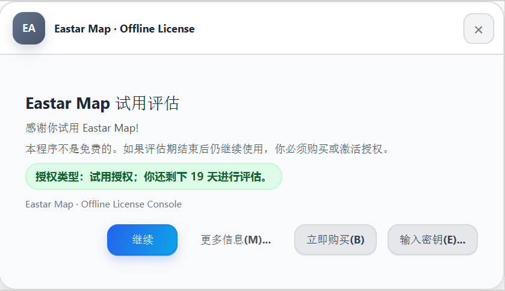

Docs
Docs
Technical documents and product articles covering chart data formats, warning capabilities, deployment integration, application scenarios, and large model integration. Continuously updated with each product release.
All Documents

Chart Data Format Notes
Explains the differences between S-57, S-63, and S-101 chart data, plus licensing, updates, and what to confirm before integration.

Warning Capability Notes
Outlines trigger basis, alert levels, and configurable options for shoal, obstruction, off-course, speed-limit, prohibited-area, and bridge-clearance warnings.

Deployment and Integration Guide
Introduces onboard, shore-side, and hybrid deployment scenarios, runtime environment requirements, and integration flows using NMEA and WebSocket interfaces.

Eastar Map: Safer Navigation on Every Voyage
From brand positioning to applicable scenarios, this article explains how Eastar Map supports navigation through chart display, live positioning, risk warning, and route planning.
Charts Are Not Only for Looking: They Participate in Judgment
Chart display is only the start. This article explains how chart data, live positioning, risk warning, and route planning work together to support navigation decisions.

Letting Large Models Call Local Chart Capabilities: The Eastar Map CLI Approach
How local C/C++ chart capabilities reach large model clients safely: a stable C ABI, the eastarmap_cli.exe JSON command contract, and a Python MCP Server.
Six Navigation Scenarios That All Need Clearer Risk Prompts
Ocean shipping, coastal fishing, inland waterways, port operations, and maritime supervision differ in detail but share one need: seeing risk earlier and keeping the route controllable.
From Website to Release: What Eastar Map Has Prepared
From brand entry and product description to application scenarios and a release path, this article reviews the foundation the Eastar Map website already provides.
Need documentation for a specific vessel type or water area?
Share your vessel type, navigation waters, chart data format, and deployment environment, and we will provide the matching technical notes and integration advice.
东星海图 · Eastar Map
Stars above. Seas ahead.